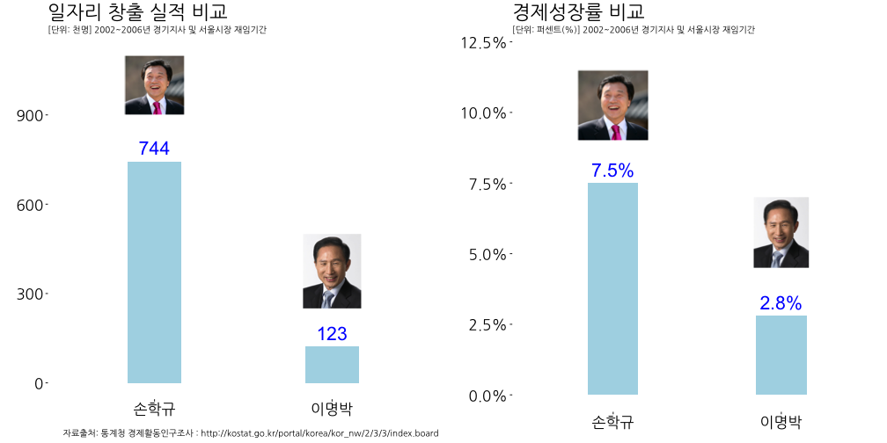

저평가 우량주 - 손학규
1. 저평가 우량주 팩트체크 1
김은혜 앵커가 언급한 저평가 우량주라는 표현에 대해 팩트체크를 해 보겠습니다.
2. 이명박 서울시장 vs. 손학규 경기지사
김은혜 앵커가 언급한 저평가 우량주라는 팩트체크 데이터는 생각보다 쉽게 인터넷에서 찾을 수 있다. 국가통계포털(KOSIS), 지역통계, 주제별, 고용노동임금, 경제활동인구조사, 행정구역(시도)별 경제활동인구를 통해 일자리 창출 실적자료를 추출한다.
2.1. 환경설정 및 사전 준비
# 1. 환경설정 ------------------------------------------------
library(tidyverse)
library(lubridate)
library(ggthemes)
library(png)
library(grid)
library(ggplot2)
library(extrafont)
library(scales)
library(gridExtra)
loadfonts()2.2. 데이터 가져오기(사진과 평가 데이터)
# 1. 데이터 가져오기 ------------------------------------------------
## 대선 후보 일자리 창출 실적
hq <- readPNG("fig/sohn.png")
hq_g <- rasterGrob(hq, interpolate=TRUE)
mb <- readPNG("fig/mb.png")
mb_g <- rasterGrob(mb, interpolate=TRUE)
hq_mb_df <- data.frame(candidate=c("손학규", "이명박"),
jobs_created = c(744, 123),
eco_growth =c(0.075, 0.028))
jobs_df <- hq_mb_df %>% dplyr::select(candidate, jobs_created)
eco_df <- hq_mb_df %>% dplyr::select(candidate, eco_growth)2.3. 저평가 우량주 비교 시각화
jobs_p <- ggplot(jobs_df, aes(x=candidate, y=jobs_created, label=jobs_created)) +
geom_bar(stat = "identity", fill="lightblue", width=.3) + theme_tufte(base_family='NanumGothic') +
scale_y_continuous(limits=c(0,1100)) +
geom_text(aes(label = jobs_created), size = 7.5, hjust = 0.5, vjust = -0.5, color="blue") +
annotation_custom(hq_g, xmin=1-0.7, xmax=1+0.7, ymin=900, ymax=1100) +
annotation_custom(mb_g, xmin=2-0.7, xmax=2+0.7, ymin=250, ymax=500) +
labs(x="",y="",title="일자리 창출 실적 비교",
caption="자료출처: 통계청 경제활동인구조사 : http://kostat.go.kr/portal/korea/kor_nw/2/3/3/index.board",
subtitle="[단위: 천명] 2002~2006년 경기지사 및 서울시장 재임기간") +
theme(axis.text=element_text(size=17, color="black"), plot.title = element_text(size=22))
eco_p <- ggplot(eco_df, aes(x=candidate, y=eco_growth, label=eco_growth)) +
geom_bar(stat = "identity", fill="lightblue", width=.3) + theme_tufte(base_family='NanumGothic') +
scale_y_continuous(labels = percent, limits = c(0, 0.12)) +
geom_text(aes(label = scales::percent(eco_growth)), size = 7.5, hjust = 0.5, vjust = -0.5, color="blue") +
annotation_custom(hq_g, xmin=1-0.7, xmax=1+0.7, ymin=0.09, ymax=0.115) +
annotation_custom(mb_g, xmin=2-0.7, xmax=2+0.7, ymin=0.045, ymax=0.070) +
labs(x="",y="",title="경제성장률 비교",
subtitle="[단위: 퍼센트(%)] 2002~2006년 경기지사 및 서울시장 재임기간") +
theme(axis.text=element_text(size=17, color="black"), plot.title = element_text(size=22))
grid.arrange(jobs_p, eco_p, ncol=2)